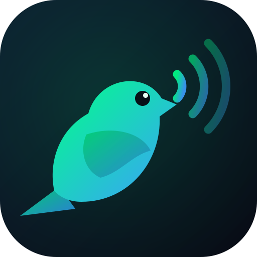

Chirping
Calibrated Bioacoustics · Free · v4.0
Locating…
Drag to orbit
Pinch to zoom
🎙️
Tap to record a bird sound
00:00
View: hi-pass 300 Hz
View: lo-pass 12 kHz
View: compressor
Peak:
—
Band:
—
SNR:
—
Tone:
—
Rate:
—
Identifying bird species…
Analysing audio…
Top 3 Matches
✕